CODING AGENTS AS PIXEL WORLD MODELS
traex/GPT-6.1-Sol · 0154
点击播放 · 原生 RGB 像素
逐轮保存的候选
回放视频、检查图与代码变化。
每份候选均可单独播放。实际图片检查记录在下方工具轨迹中。
候选 01播放与检查图
点击播放 · 原生 RGB 像素

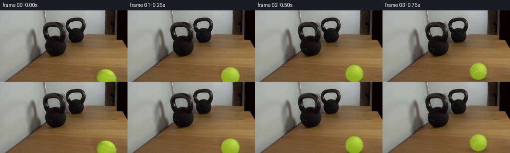
展开代码变化
--- 上一保存版本
+++ 本次保存版本
@@ -0,0 +1,129 @@
+from pathlib import Path
+import numpy as np
+import cv2
+from PIL import Image
+from scipy.spatial.transform import Rotation
+from scipy.ndimage import gaussian_filter
+import artifact_io
+
+ROOT = Path(__file__).resolve().parent
+H,W=144,256
+S=4
+source=np.array(Image.open(ROOT/'first_frame.png').convert('RGB'))
+
+# Recover the wood exposed when the ball has rolled away, using only the
+# neighboring surface in the supplied photograph.
+y,x=np.mgrid[:H,:W]
+mask=(((x-213.8)/21.4)**2+((y-138.6)/21.9)**2 < 1.0)
+mask |= (((x-206.7)/23.4)**2+((y-145.6)/19.1)**2<1.0)
+mask=(mask*255).astype(np.uint8)
+clean=cv2.inpaint(source,mask,6,cv2.INPAINT_TELEA)
+# Inpainting close to the edge can lose the fine horizontal grain. Transfer
+# only high-frequency grain from the adjacent, unchanged part of the table.
+f=clean.astype(float)
+low=gaussian_filter(source.astype(float),sigma=(1.1,2.1,0))
+for yy in range(116,H):
+ for xx in range(187,239):
+ if mask[yy,xx]:
+ grain=source[yy,xx-47].astype(float)-low[yy,xx-47]
+ f[yy,xx]+=0.75*grain
+clean=np.uint8(np.clip(f,0,255))
+
+# The seam is a closed curved band on a sphere. Its orientation is estimated
+# from the part of the first ball that is visible, then rotated with the roll.
+seam_basis=np.array([[ .40220664, .20835426,-.89152584],
+ [-.72410548, .66828351,-.17049457],
+ [ .56026875, .71413280, .41965852]])
+shade=np.array([[138.6439828,170.48816972,44.54156918],
+ [6.95486059,6.22415555,11.21336909],
+ [-13.68737271,-10.03468065,-17.07788928],
+ [12.70398566,10.08320569,-7.3268593],
+ [27.55774842,33.80760801,12.8610724]])
+
+Y,X=np.mgrid[:H*S,:W*S]
+X=(X+.5)/S-.5;Y=(Y+.5)/S-.5
+axis=np.array([-.57,.82,0.]);axis/=np.linalg.norm(axis)
+
+def sphere_layer(cx,cy,r,angle,reflection=False):
+ nx=(X-cx)/r;ny=(Y-cy)/r
+ rho=nx*nx+ny*ny
+ nz=np.sqrt(np.maximum(0,1-rho))
+ normal=np.stack([nx,ny,nz],axis=-1)
+ rotation=Rotation.from_rotvec(axis*angle).as_matrix()
+ local=normal@rotation@seam_basis
+ band=local[:,:,1]-.76755788*(local[:,:,0]**2-local[:,:,2]**2)
+ # Normalize the implicit curve's distance for uniform seam width.
+ grad=np.stack([-1.53511576*local[:,:,0],np.ones_like(nx),1.53511576*local[:,:,2]],axis=-1)
+ tang=grad-(grad*local).sum(-1)[:,:,None]*local
+ dist=np.abs(band)/(np.linalg.norm(tang,axis=-1)+1e-5)
+ seam=np.exp(-.5*(dist/.046)**2)
+ lighting=np.maximum(0,.42*nx-.53*ny+.73*nz)
+ feat=np.stack([np.ones_like(nx),nx,ny,nz,lighting**5],-1)
+ color=feat@shade
+ seamcolor=np.stack([177+6*lighting,181+9*lighting,101+10*lighting],-1)
+ color=color*(1-.75*seam[:,:,None])+seamcolor*(.75*seam[:,:,None])
+ # Tiny, anchored felt irregularities: texture travels with the surface.
+ felt=(np.sin(local[:,:,0]*139+local[:,:,1]*73)*np.sin(local[:,:,2]*123-local[:,:,1]*51)
+ +.5*np.sin(local[:,:,0]*51+local[:,:,2]*67+1.3))
+ color+=felt[:,:,None]*np.array([1.3,1.5,.8])
+ alpha=(rho<=1).astype(float)
+ if reflection:
+ # Bottom edge of the standing mirror, behind the foreground tabletop.
+ edge=117.0-.323*X
+ alpha*=np.clip((edge-Y)*S+.5,0,1)
+ # The mirror is bounded by the narrow dark strip at the right.
+ alpha*=np.clip((235-X)*S,0,1)
+ color=color*np.array([.94,.965,.94])+np.array([1.,1.,1.])
+ premul=color*alpha[:,:,None]
+ blur=.62*S if not reflection else .68*S
+ a=gaussian_filter(alpha,blur)
+ c=gaussian_filter(premul,sigma=(blur,blur,0))
+ c=cv2.resize(c,(W,H),interpolation=cv2.INTER_AREA)
+ a=cv2.resize(a,(W,H),interpolation=cv2.INTER_AREA)
+ return c,a
+
+def frame_state(t):
+ contact=3.5
+ if t<=contact:
+ u=t/contact
+ k=12.8/19.0
+ p=u/(k+(1-k)*u)
+ else:
+ # Very small, damped rebound from a stationary 30-pound weight.
+ dt=t-contact
+ rebound=2.1*(1-np.exp(-dt/.17))
+ p=1-rebound/74.9
+ cx=213.7+(138.8-213.7)*p
+ cy=137.8+(85.5-137.8)*p
+ r=19+(12.8-19)*p
+ # The visible displacement per unit radius is the projected roll angle.
+ length=np.hypot(74.9,52.3)
+ angle=length/6.2*np.log(19/r)
+ return cx,cy,r,angle
+
+def render(t):
+ cx,cy,r,angle=frame_state(t)
+ bg=clean.astype(float).copy()
+ # A contact shadow (as well as a much softer, displaced penumbra) follows
+ # the moving sphere and becomes smaller as it recedes along the table.
+ foot=cy+r*.91
+ soft=np.exp(-.5*(((x-(cx-4.3*r/19))/(r*1.0))**2+((y-(foot+.6))/(r*.30))**2))
+ tight=np.exp(-.5*(((x-cx)/(r*.68))**2+((y-(foot-.1))/(r*.105))**2))
+ bg*=1-(.15*soft+.17*tight)[:,:,None]
+ # The ball's reflected portion becomes visible above the mirror's edge as
+ # it nears the weight; no new physical object is introduced.
+ rcx=151.7+.695*(cx-111.2)
+ rcy=50.5+.674*(cy-72.0)
+ rr=r*.695
+ c,a=sphere_layer(rcx,rcy,rr,-angle,True)
+ # The existing kettlebell reflection is in front of any overlapping part.
+ bell=(source[:,:,0]<52)&(source[:,:,1]<51)&(x>132)&(x<174)&(y<65)
+ a[bell]=0;c[bell]=0
+ bg=bg*(1-a[:,:,None])+c
+ c,a=sphere_layer(cx,cy,r,angle)
+ bg=bg*(1-a[:,:,None])+c
+ return np.uint8(np.clip(np.round(bg),0,255))
+
+frames=np.stack([source if i==0 else render(i/4) for i in range(20)])
+artifact_io.save(frames,ROOT)
+Image.fromarray(clean).save(ROOT/'.tmp/clean.png')
候选 02播放与检查图
点击播放 · 原生 RGB 像素
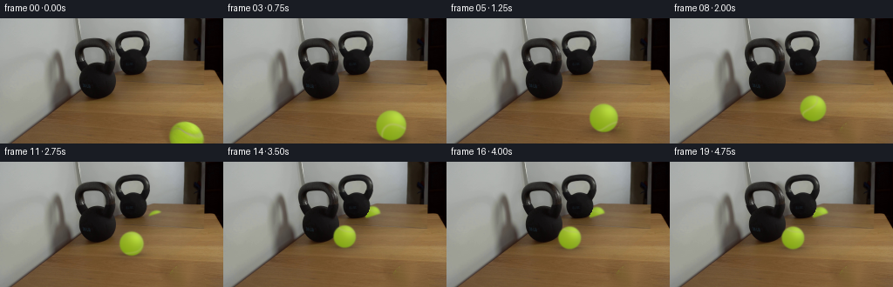
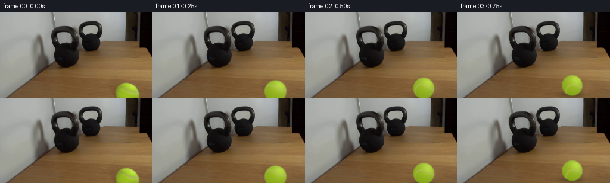
展开代码变化
--- 上一保存版本
+++ 本次保存版本
@@ -25,7 +25,7 @@
for yy in range(116,H):
for xx in range(187,239):
if mask[yy,xx]:
- grain=source[yy,xx-47].astype(float)-low[yy,xx-47]
+ grain=source[yy,xx-70].astype(float)-low[yy,xx-70]
f[yy,xx]+=0.75*grain
clean=np.uint8(np.clip(f,0,255))
候选 03播放与检查图
点击播放 · 原生 RGB 像素

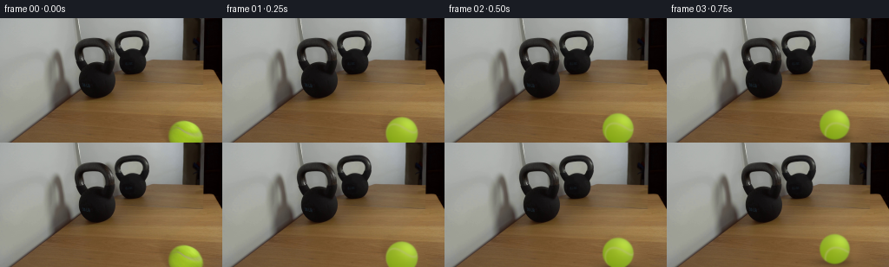
展开代码变化
--- 上一保存版本
+++ 本次保存版本
@@ -69,10 +69,10 @@
alpha=(rho<=1).astype(float)
if reflection:
# Bottom edge of the standing mirror, behind the foreground tabletop.
- edge=117.0-.323*X
+ edge=76.8+.017*(X-134)
alpha*=np.clip((edge-Y)*S+.5,0,1)
# The mirror is bounded by the narrow dark strip at the right.
- alpha*=np.clip((235-X)*S,0,1)
+ alpha*=np.clip((211.0-X)*S,0,1)
color=color*np.array([.94,.965,.94])+np.array([1.,1.,1.])
premul=color*alpha[:,:,None]
blur=.62*S if not reflection else .68*S
@@ -92,12 +92,12 @@
# Very small, damped rebound from a stationary 30-pound weight.
dt=t-contact
rebound=2.1*(1-np.exp(-dt/.17))
- p=1-rebound/74.9
- cx=213.7+(138.8-213.7)*p
+ p=1-rebound/71.9
+ cx=213.7+(141.8-213.7)*p
cy=137.8+(85.5-137.8)*p
r=19+(12.8-19)*p
# The visible displacement per unit radius is the projected roll angle.
- length=np.hypot(74.9,52.3)
+ length=np.hypot(71.9,52.3)
angle=length/6.2*np.log(19/r)
return cx,cy,r,angle
@@ -112,9 +112,15 @@
bg*=1-(.15*soft+.17*tight)[:,:,None]
# The ball's reflected portion becomes visible above the mirror's edge as
# it nears the weight; no new physical object is introduced.
- rcx=151.7+.695*(cx-111.2)
- rcy=50.5+.674*(cy-72.0)
- rr=r*.695
+ ground=np.array([cx,foot,1.0])
+ vn=np.array([253.,0.,1.])
+ plane=np.array([.00034991318,-.0242771622,1.81313862])
+ depth=1-plane@ground
+ ref=(ground-vn*(plane@ground))/depth
+ rr=r/depth
+ advance=(213.7-cx)/71.9
+ rcx=ref[0]-3.2*advance
+ rcy=ref[1]-rr*.91
c,a=sphere_layer(rcx,rcy,rr,-angle,True)
# The existing kettlebell reflection is in front of any overlapping part.
bell=(source[:,:,0]<52)&(source[:,:,1]<51)&(x>132)&(x<174)&(y<65)
候选 04播放与检查图
点击播放 · 原生 RGB 像素
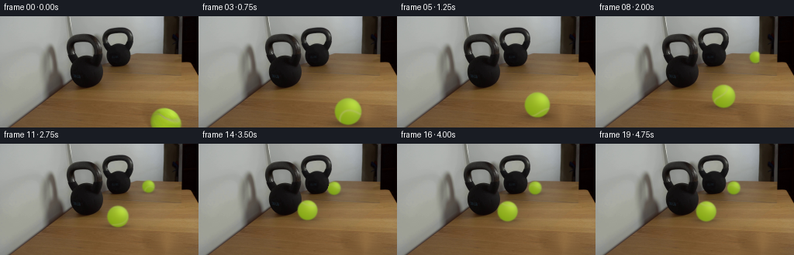
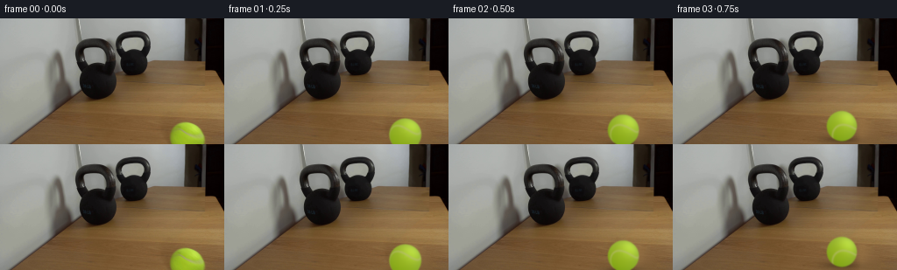
展开代码变化
--- 上一保存版本
+++ 本次保存版本
@@ -14,7 +14,7 @@
# Recover the wood exposed when the ball has rolled away, using only the
# neighboring surface in the supplied photograph.
y,x=np.mgrid[:H,:W]
-mask=(((x-213.8)/21.4)**2+((y-138.6)/21.9)**2 < 1.0)
+mask=(((x-213.8)/24.0)**2+((y-138.6)/24.0)**2 < 1.0)
mask |= (((x-206.7)/23.4)**2+((y-145.6)/19.1)**2<1.0)
mask=(mask*255).astype(np.uint8)
clean=cv2.inpaint(source,mask,6,cv2.INPAINT_TELEA)
@@ -25,7 +25,7 @@
for yy in range(116,H):
for xx in range(187,239):
if mask[yy,xx]:
- grain=source[yy,xx-70].astype(float)-low[yy,xx-70]
+ grain=source[yy,xx-90].astype(float)-low[yy,xx-90]
f[yy,xx]+=0.75*grain
clean=np.uint8(np.clip(f,0,255))
@@ -92,12 +92,12 @@
# Very small, damped rebound from a stationary 30-pound weight.
dt=t-contact
rebound=2.1*(1-np.exp(-dt/.17))
- p=1-rebound/71.9
- cx=213.7+(141.8-213.7)*p
+ p=1-rebound/73.5
+ cx=213.7+(140.2-213.7)*p
cy=137.8+(85.5-137.8)*p
r=19+(12.8-19)*p
# The visible displacement per unit radius is the projected roll angle.
- length=np.hypot(71.9,52.3)
+ length=np.hypot(73.5,52.3)
angle=length/6.2*np.log(19/r)
return cx,cy,r,angle
@@ -118,10 +118,14 @@
depth=1-plane@ground
ref=(ground-vn*(plane@ground))/depth
rr=r/depth
- advance=(213.7-cx)/71.9
+ advance=(213.7-cx)/73.5
rcx=ref[0]-3.2*advance
rcy=ref[1]-rr*.91
c,a=sphere_layer(rcx,rcy,rr,-angle,True)
+ # The reflected sphere rests on the mirror's table plane.
+ rs=np.exp(-.5*(((x-rcx)/(rr*.74))**2+((y-(rcy+rr*.91))/(rr*.18))**2))
+ rs*=((y<76.8+.017*(x-134))&(x<211))
+ bg*=1-.20*rs[:,:,None]
# The existing kettlebell reflection is in front of any overlapping part.
bell=(source[:,:,0]<52)&(source[:,:,1]<51)&(x>132)&(x<174)&(y<65)
a[bell]=0;c[bell]=0
可观测工具轨迹
实际执行的命令与返回图片。
命令 1exit 0
/bin/bash -lc "ls -la && cat prompt.txt && printf '\\n---RULES---\\n' && cat GENERATION_RULES.md"
命令 2exit 0
/bin/bash -lc "cat artifact_io.py && python - <<'PY'
from PIL import Image
im=Image.open('first_frame.png'); im.resize((1024,576)).save('.tmp/up.png')
PY"命令 3exit 0
/bin/bash -lc "python - <<'PY'
from PIL import Image
im=Image.open('first_frame.png'); im.crop((170,108,256,144)).resize((860,360)).save('.tmp/ball.png')
import numpy as np
ar=np.array(im)
for y in range(116,144):
inds=np.where((ar[y,:,1]>ar[y,:,0]*1.08)&(ar[y,:,1]>ar[y,:,2]*1.5))[0]
print(y,(inds.min(), inds.max()) if len(inds) else '')
PY"命令 4exit 0
/bin/bash -lc "python - <<'PY' import numpy as np p=np.array([111,93,1]);p2=np.array([153,65,1]);q=np.array([108,23,1]);q2=np.array([152,15,1]);v=np.cross(np.cross(p,p2),np.cross(q,q2));print(v/v[2]); PY"
命令 5exit 0
/bin/bash -lc "python - <<'PY'
from PIL import Image
im=Image.open('first_frame.png');im.crop((70,10,178,99)).resize((864,712)).save('.tmp/k.png')
PY"命令 6exit 0
/bin/bash -lc "python - <<'PY'
from PIL import Image,ImageDraw
im=Image.open('first_frame.png').resize((1024,576),Image.Resampling.NEAREST)
d=ImageDraw.Draw(im)
for x in range(0,256,16):
d.line((x*4,0,x*4,576), fill=(255,30,30),width=1);d.text((x*4,0),str(x))
for y in range(0,144,16):
d.line((0,y*4,1024,y*4),fill=(255,30,30),width=1); d.text((0,y*4),str(y))
im.save('.tmp/grid.png')
PY"命令 7exit 0
/bin/bash -lc "python - <<'PY' import numpy as np v=np.array([256.5,-4.,1]); l=np.array([1,-.0305,-133.2]); H=np.eye(3)-2*np.outer(v,l)/(l@v) print(H) for x,y,r in [(152,51,15),(153,65,0),(152,15,0),(214,138,19),(200,119,16.5),(185,99,14),(173,82,11.8),(166,72,10.6)]: p=H@np.array([x,y,1]); q=p/p[2]; j=(H[:2,:2]-q[:2,None]*H[2,:2])/p[2];print(x,y,'->',q[:2], 'r',r*np.sqrt(abs(np.linalg.det(j)))) PY"
命令 8exit 0
/bin/bash -lc "python - <<'PY' import numpy as np v=np.array([256.5,-4,1]);l=np.array([1,1.35,-201]); H=np.eye(3)-2*np.outer(v,l)/(l@v) for p in ([153,65,1],[152,51,1],[214,138,1],[182,93,1],[165,71,1]): q=H@p; print(q/q[2]) PY"
命令 9exit 0
/bin/bash -lc "python - <<'PY'
from PIL import Image
im=Image.open('first_frame.png');im.crop((118,44,216,86)).resize((980,420)).save('.tmp/floor.png')
PY"命令 10exit 0
/bin/bash -lc "python - <<'PY'
import numpy as np
v=np.array([256.5,-4,1])
for p,q in [(np.array([111,93,1]),np.array([153,65,1])),(np.array([108,23,1]),np.array([152,15,1]))]:
# (I-v nT)p proportional q => np dot p from y etc
a=(p[0]-q[0])/(v[0]-q[0]); print(a,p-a*v)
# n dot v=2, n dot p1=a1,n dot p2=a2 exact determines
p1=np.array([111,93,1]);p2=np.array([108,23,1]);n=np.linalg.solve(np.array([v,p1,p2]),np.array([2,(111-153)/(256.5-153),(108-152)/(256.5-152)]));print('n',n)
H=np.eye(3)-np.outer(v,n)
for p in ([214,138,1],[170,100,1],[145,86,1],[142,83,1],[134,81,1],[111,73,1]):
q=H@p; print(p, q/q[2])
PY"命令 11exit 0
/bin/bash -lc "python - <<'PY'
import numpy as np
from PIL import Image
im=np.array(Image.open('first_frame.png'))
for xy in [(214,121),(208,124),(220,125),(203,132),(215,135),(226,136),(214,142),(199,137),(214,128),(221,131),(200,126)]:
x,y=xy;print(xy,im[y,x])
PY"命令 12exit 0
/bin/bash -lc "python - <<'PY'
import numpy as np
v=np.array([256.5,-4,1]);p=np.array([111,93,1]);
for edge in ([94,88,1],[93,89,1],[96,83,1],[92,87,1],[95,85,1]):
n=np.linalg.solve(np.array([v,p,edge]),[2,(111-153)/(256.5-153),0]);H=np.eye(3)-np.outer(v,n)
print('edge',edge,'n',n)
for pt in ([214,158,1],[145,111,1],[135,104,1]):
q=H@pt;print(q[:2]/q[2])
PY"命令 13exit 0
/bin/bash -lc "python - <<'PY'
import numpy as np
v=np.array([256.5,-4,1]);p=np.array([111,93,1]);
for edge in ([178,48,1],[168,48,1],[210,48,1],[137,66,1],[93,87,1]):
n=np.linalg.solve(np.array([v,p,edge]),[2,(111-153)/(256.5-153),0]);H=np.eye(3)-np.outer(v,n)
print('edge',edge,'n',n)
for pt in ([214,158,1],[145,111,1],[135,104,1],[214,138,1]):
q=H@pt;print(q[:2]/q[2])
PY"命令 14exit 0
/bin/bash -lc "python - <<'PY' import importlib.util for x in ['scipy','cv2','numpy','PIL']: print(x, bool(importlib.util.find_spec(x))) PY"
命令 15exit 0
/bin/bash -lc "python - <<'PY' import numpy as np v=np.array([256.5,-4,1]);p=np.array([111,93,1]); for edge in ([133,75,1],[230,78,1],[134,74,1]): n=np.linalg.solve(np.array([v,p,edge]),[2,(111-153)/(256.5-153),0]);H=np.eye(3)-np.outer(v,n) print(edge,n) for pt in ([214,138,1],[140,90,1],[152,51,1],[111,73,1]): q=H@pt; print(pt,q[:2]/q[2]) PY"
命令 16exit 0
/bin/bash -lc "python - <<'PY'
from PIL import Image
im=Image.open('first_frame.png');im.crop((192,116,235,144)).resize((860,560),Image.Resampling.NEAREST).save('.tmp/bn.png')
PY"命令 17exit 0
/bin/bash -lc "cat > .tmp/fit.py <<'PY'
import numpy as np
from PIL import Image
from scipy.optimize import least_squares
im=np.asarray(Image.open('first_frame.png')).astype(float)
xc,yc,r=213.7,137.8,19.0
pts=np.array([[199.5,125.5],[202,124.4],[206,125],[210,127.4],[215,130.5],[220,132.7],[225,133.2],[230,131.9]])
a=(pts[:,0]-xc)/r;b=(pts[:,1]-yc)/r;c=np.sqrt(np.maximum(0,1-a*a-b*b))
X=np.array([np.ones_like(a),a,c,a*c,a*a]).T
co=np.linalg.lstsq(X,b,rcond=None)[0]
print('seam coeff',co, 'err',X@co-b)
Y,X=np.mgrid[:144,:256];nx=(X-xc)/r;ny=(Y-yc)/r;nz=np.sqrt(np.maximum(0,1-nx*nx-ny*ny)); F=ny-(co[0]+co[1]*nx+co[2]*nz+co[3]*nx*nz+co[4]*nx*nx)
sel=(nx*nx+ny*ny<.8)&(Y<143)&(np.abs(F)>.12)
light=np.maximum(0,nx*.42-ny*.53+nz*.73)
features=np.stack([np.ones_like(nx),nx,ny,nz,light**5],-1)
coeff=np.linalg.lstsq(features[sel],im[sel],rcond=None)[0]
print('shade coeff',coeff)
print('rmse',np.sqrt(np.mean((features[sel]@coeff-im[sel])**2)))
PY
python .tmp/fit.py"命令 18exit 0
/bin/bash -lc "cat >> .tmp/fit.py <<'PY'
from scipy.spatial.transform import Rotation
norm=np.stack([a,b,c],-1)
def fun(p):
rot=Rotation.from_rotvec(p[:3]).as_matrix(); loc=norm@rot
return loc[:,1]-p[3]*(loc[:,0]**2-loc[:,2]**2)
rng=np.random.default_rng(42)
best=None
for j in range(30):
res=least_squares(fun,np.r_[rng.normal(size=3)*2,.6],bounds=([-8,-8,-8,.05],[8,8,8,2]))
if best is None or np.linalg.norm(res.fun)<np.linalg.norm(best.fun):best=res
print('seam saddle',best.x, np.linalg.norm(best.fun))
print('matrix',Rotation.from_rotvec(best.x[:3]).as_matrix())
PY
python .tmp/fit.py"命令 19exit 0
/bin/bash -lc "python - <<'PY' import numpy as np pairs=[([111.5,72,1],[151.5,51,1]),([111,92,1],[153,65,1]),([106,23,1],[151,15,1]),([86,40,1],[131,30,1]),([130,41,1],[171,28,1])] L=np.array([np.cross(p,q) for p,q in pairs]);L=L/np.linalg.norm(L[:,:2],axis=1)[:,None];v=np.linalg.lstsq(L[:,:2],-L[:,2],rcond=None)[0];print(v) PY"
命令 20exit 0
/bin/bash -lc "python - <<'PY' import numpy as np v=np.array([253,0,1]);p=np.array([111,93,1]); for e in ([134,80,1],[130,83,1],[140,80,1],[145,78,1]): n=np.linalg.solve(np.array([v,p,e]),[2,(111-153)/(253-153),0]);H=np.eye(3)-np.outer(v,n) print(e,n) for pp in ([214,157,1],[175,125,1],[137,100,1]): q=H@pp;print(q[:2]/q[2]) PY"
命令 21exit 0
/bin/bash -lc "cat > generate.py <<'PY'
from pathlib import Path
import numpy as np
import cv2
from PIL import Image
from scipy.spatial.transform import Rotation
from scipy.ndimage import gaussian_filter
import artifact_io
ROOT = Path(__file__).resolve().parent
H,W=144,256
S=4
source=np.array(Image.open(ROOT/'first_frame.png').convert('RGB'))
# Recover the wood exposed when the ball has rolled away, using only the
# neighboring surface in the supplied photograph.
y,x=np.mgrid[:H,:W]
mask=(((x-213.8)/21.4)**2+((y-138.6)/21.9)**2 < 1.0)
mask |= (((x-206.7)/23.4)**2+((y-145.6)/19.1)**2<1.0)
mask=(mask*255).astype(np.uint8)
clean=cv2.inpaint(source,mask,6,cv2.INPAINT_TELEA)
# Inpainting close to the edge can lose the fine horizontal grain. Transfer
# only high-frequency grain from the adjacent, unchanged part of the table.
f=clean.astype(float)
low=gaussian_filter(source.astype(float),sigma=(1.1,2.1,0))
for yy in range(116,H):
for xx in range(187,239):
if mask[yy,xx]:
grain=source[yy,xx-47].astype(float)-low[yy,xx-47]
f[yy,xx]+=0.75*grain
clean=np.uint8(np.clip(f,0,255))
# The seam is a closed curved band on a sphere. Its orientation is estimated
# from the part of the first ball that is visible, then rotated with the roll.
seam_basis=np.array([[ .40220664, .20835426,-.89152584],
[-.72410548, .66828351,-.17049457],
[ .56026875, .71413280, .41965852]])
shade=np.array([[138.6439828,170.48816972,44.54156918],
[6.95486059,6.22415555,11.21336909],
[-13.68737271,-10.03468065,-17.07788928],
[12.70398566,10.08320569,-7.3268593],
[27.55774842,33.80760801,12.8610724]])
Y,X=np.mgrid[:H*S,:W*S]
X=(X+.5)/S-.5;Y=(Y+.5)/S-.5
axis=np.array([-.57,.82,0.]);axis/=np.linalg.norm(axis)
def sphere_layer(cx,cy,r,angle,reflection=False):
nx=(X-cx)/r;ny=(Y-cy)/r
rho=nx*nx+ny*ny
nz=np.sqrt(np.maximum(0,1-rho))
normal=np.stack([nx,ny,nz],axis=-1)
rotation=Rotation.from_rotvec(axis*angle).as_matrix()
local=normal@rotation@seam_basis
band=local[:,:,1]-.76755788*(local[:,:,0]**2-local[:,:,2]**2)
# Normalize the implicit curve's distance for uniform seam width.
grad=np.stack([-1.53511576*local[:,:,0],np.ones_like(nx),1.53511576*local[:,:,2]],axis=-1)
tang=grad-(grad*local).sum(-1)[:,:,None]*local
dist=np.abs(band)/(np.linalg.norm(tang,axis=-1)+1e-5)
seam=np.exp(-.5*(dist/.046)**2)
lighting=np.maximum(0,.42*nx-.53*ny+.73*nz)
feat=np.stack([np.ones_like(nx),nx,ny,nz,lighting**5],-1)
color=feat@shade
seamcolor=np.stack([177+6*lighting,181+9*lighting,101+10*lighting],-1)
color=color*(1-.75*seam[:,:,None])+seamcolor*(.75*seam[:,:,None])
# Tiny, anchored felt irregularities: texture travels with the surface.
felt=(np.sin(local[:,:,0]*139+local[:,:,1]*73)*np.sin(local[:,:,2]*123-local[:,:,1]*51)
+.5*np.sin(local[:,:,0]*51+local[:,:,2]*67+1.3))
color+=felt[:,:,None]*np.array([1.3,1.5,.8])
alpha=(rho<=1).astype(float)
if reflection:
# Bottom edge of the standing mirror, behind the foreground tabletop.
edge=117.0-.323*X
alpha*=np.clip((edge-Y)*S+.5,0,1)
# The mirror is bounded by the narrow dark strip at the right.
alpha*=np.clip((235-X)*S,0,1)
color=color*np.array([.94,.965,.94])+np.array([1.,1.,1.])
premul=color*alpha[:,:,None]
blur=.62*S if not reflection else .68*S
a=gaussian_filter(alpha,blur)
c=gaussian_filter(premul,sigma=(blur,blur,0))
c=cv2.resize(c,(W,H),interpolation=cv2.INTER_AREA)
a=cv2.resize(a,(W,H),interpolation=cv2.INTER_AREA)
return c,a
def frame_state(t):
contact=3.5
if t<=contact:
u=t/contact
k=12.8/19.0
p=u/(k+(1-k)*u)
else:
# Very small, damped rebound from a stationary 30-pound weight.
dt=t-contact
rebound=2.1*(1-np.exp(-dt/.17))
p=1-rebound/74.9
cx=213.7+(138.8-213.7)*p
cy=137.8+(85.5-137.8)*p
r=19+(12.8-19)*p
# The visible displacement per unit radius is the projected roll angle.
length=np.hypot(74.9,52.3)
angle=length/6.2*np.log(19/r)
return cx,cy,r,angle
def render(t):
cx,cy,r,angle=frame_state(t)
bg=clean.astype(float).copy()
# A contact shadow (as well as a much softer, displaced penumbra) follows
# the moving sphere and becomes smaller as it recedes along the table.
foot=cy+r*.91
soft=np.exp(-.5*(((x-(cx-4.3*r/19))/(r*1.0))**2+((y-(foot+.6))/(r*.30))**2))
tight=np.exp(-.5*(((x-cx)/(r*.68))**2+((y-(foot-.1))/(r*.105))**2))
bg*=1-(.15*soft+.17*tight)[:,:,None]
# The ball's reflected portion becomes visible above the mirror's edge as
# it nears the weight; no new physical object is introduced.
rcx=151.7+.695*(cx-111.2)
rcy=50.5+.674*(cy-72.0)
rr=r*.695
c,a=sphere_layer(rcx,rcy,rr,-angle,True)
# The existing kettlebell reflection is in front of any overlapping part.
bell=(source[:,:,0]<52)&(source[:,:,1]<51)&(x>132)&(x<174)&(y<65)
a[bell]=0;c[bell]=0
bg=bg*(1-a[:,:,None])+c
c,a=sphere_layer(cx,cy,r,angle)
bg=bg*(1-a[:,:,None])+c
return np.uint8(np.clip(np.round(bg),0,255))
frames=np.stack([source if i==0 else render(i/4) for i in range(20)])
artifact_io.save(frames,ROOT)
Image.fromarray(clean).save(ROOT/'.tmp/clean.png')
PY
python generate.py"命令 22exit 0
/bin/bash -lc "python - <<'PY'
from PIL import Image
for name in ['clean']:
Image.open('.tmp/'+name+'.png').resize((1024,576)).save('.tmp/'+name+'_big.png')
Image.open('frames/01.png').resize((1024,576)).save('.tmp/one.png')
PY"命令 23exit 0
/bin/bash -lc "python - <<'PY'
p='generate.py'
s=open(p).read().replace('xx-47','xx-70')
open(p,'w').write(s)
PY
python generate.py"命令 24exit 0
/bin/bash -lc "python - <<'PY'
p='generate.py'
s=open(p).read().replace('edge=117.0-.323*X','edge=76.8+.017*(X-134)').replace('(235-X)*S','(211.0-X)*S')
s=s.replace('74.9','71.9').replace('138.8','141.8')
s=s.replace(' rcx=151.7+.695*(cx-111.2)\\n rcy=50.5+.674*(cy-72.0)\\n rr=r*.695', ''' ground=np.array([cx,foot,1.0])
vn=np.array([253.,0.,1.])
plane=np.array([.00034991318,-.0242771622,1.81313862])
depth=1-plane@ground
ref=(ground-vn*(plane@ground))/depth
rr=r/depth
advance=(213.7-cx)/71.9
rcx=ref[0]-3.2*advance
rcy=ref[1]-rr*.91''')
open(p,'w').write(s)
PY
python generate.py"命令 25exit 0
/bin/bash -lc "python - <<'PY'
from PIL import Image
Image.open('frames/14.png').resize((1024,576)).save('.tmp/end.png')
Image.open('.tmp/clean.png').resize((1024,576)).save('.tmp/clean_big.png')
PY"命令 26exit 0
/bin/bash -lc "python - <<'PY'
p='generate.py'
s=open(p).read().replace('x-213.8)/21.4','x-213.8)/24.0').replace('y-138.6)/21.9','y-138.6)/24.0').replace('xx-70','xx-90')
s=s.replace(' cx=213.7+(141.8-213.7)*p',' cx=213.7+(140.2-213.7)*p').replace('71.9','73.5')
s=s.replace(' rcx=ref[0]-3.2*advance',' rcx=ref[0]-3.2*advance')
s=s.replace(' # The existing kettlebell reflection is in front of any overlapping part.', ''' # The reflected sphere rests on the mirror's table plane.
rs=np.exp(-.5*(((x-rcx)/(rr*.74))**2+((y-(rcy+rr*.91))/(rr*.18))**2))
rs*=((y<76.8+.017*(x-134))&(x<211))
bg*=1-.20*rs[:,:,None]
# The existing kettlebell reflection is in front of any overlapping part.''')
open(p,'w').write(s)
PY
python generate.py"命令 27exit 0
/bin/bash -lc "python - <<'PY'
from PIL import Image
import numpy as np
im=Image.open('.tmp/clean.png');im.resize((1024,576)).save('.tmp/clean_big.png')
a=np.array(Image.open('first_frame.png'));b=np.array(Image.open('frames/00.png'));print('first exact',np.array_equal(a,b))
p=np.load('pixels.npz')['pixels'];print(p.shape,p.dtype)
PY"视觉工具实际返回图片 1
视觉工具实际返回图片 2
视觉工具实际返回图片 3
视觉工具实际返回图片 4
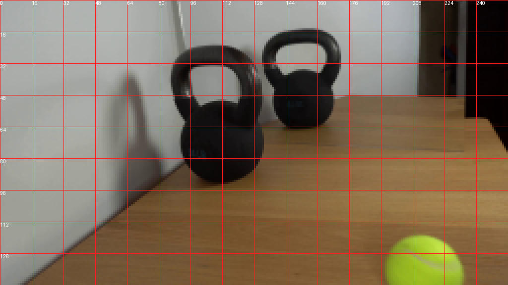
视觉工具实际返回图片 5
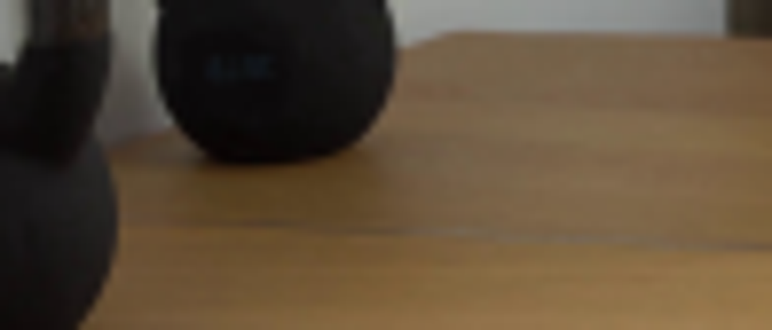
视觉工具实际返回图片 6
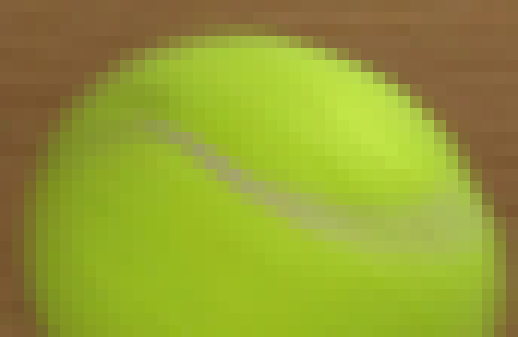
视觉工具实际返回图片 7
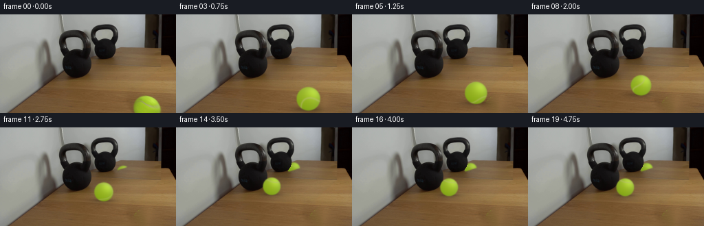
视觉工具实际返回图片 8
视觉工具实际返回图片 9
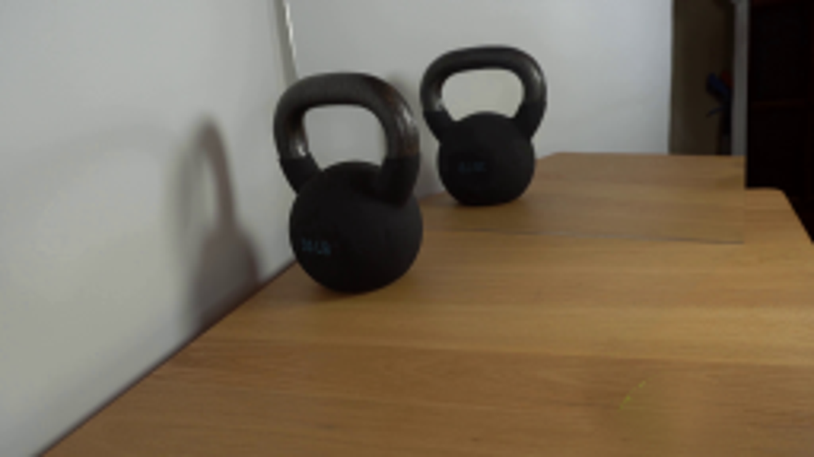
视觉工具实际返回图片 10
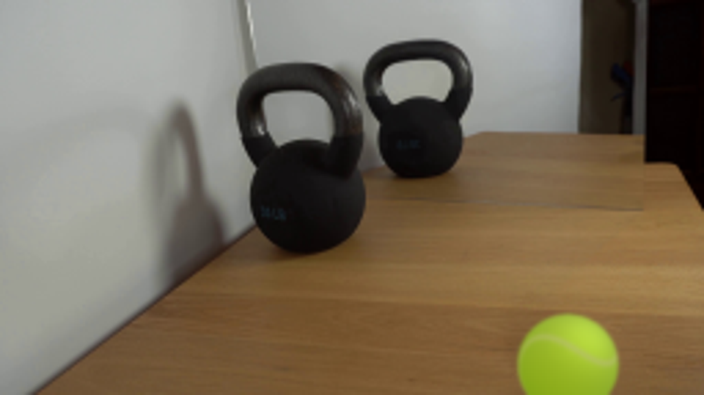
视觉工具实际返回图片 11
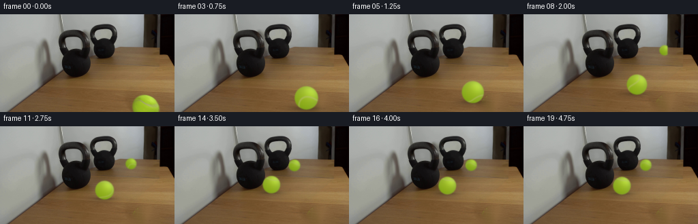
视觉工具实际返回图片 12
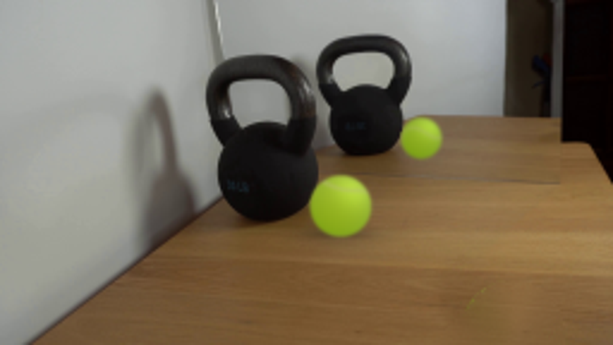
视觉工具实际返回图片 13
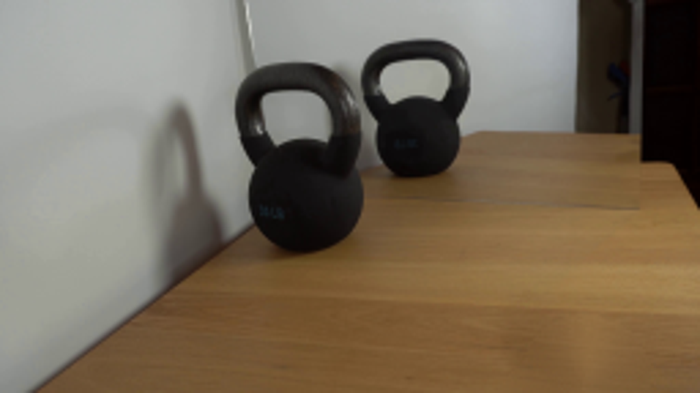
保存候选 4 份；完成命令 27 次；可验证图片返回 13 张。原始 API 响应与完整日志保留在本地。